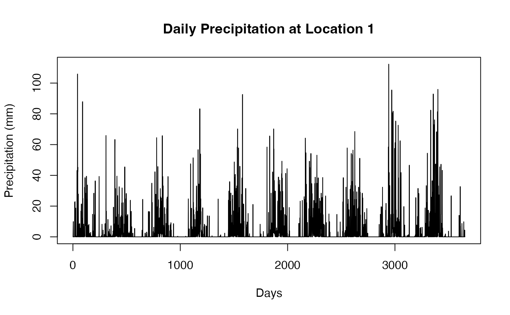

This dataset contains daily accumulated precipitation (in mm) over a 10-year period, from January 1, 2013, to December 31, 2022. The data were collected from 20 rain gauges located in the states of Maranhão and Piauí, Brazil. Each column represents the precipitation recorded at one rain gauge, and each row corresponds to a specific day in the observation period.
seriesA matrix with m rows and 20 columns, where:
The number of days in the observation period (3652 for a 10-year period including leap years).
Each column represents daily precipitation (in mm) recorded at one of the 20 rain gauges.
National Institute of Meteorology (INMET) and National Water and Basic Sanitation Agency (ANA).
The data were collected using rain gauges installed at national meteorological stations managed by the National Institute of Meteorology (INMET) and the National Water and Basic Sanitation Agency (ANA). The study area covers parts of Maranhão and Piauí, located in northeastern Brazil, a region known for its diverse climatic and geographic conditions. The dataset provides valuable insights for climate and hydrology studies in this region.
The dataset is available from the Meteorological Database for Teaching and Research (https://bdmep.inmet.gov.br) and the ANA Open Data Portal (https://dadosabertos.ana.gov.br).
# Load the dataset
data(series)
# View the dimensions of the matrix
dim(series)
#> [1] 3652 20
# Summary of precipitation for the first location
summary(series[, 1])
#> Min. 1st Qu. Median Mean 3rd Qu. Max.
#> 0.00 0.00 0.00 4.26 1.90 112.30
# Plot precipitation for the first location
plot(series[, 1], type = "l",
xlab = "Days", ylab = "Precipitation (mm)",
main = "Daily Precipitation at Location 1")
